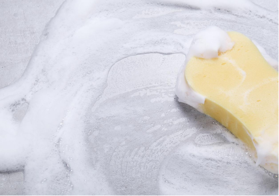

Industry Information
Jan. 26, 2025
GOLIATH is a trusted chemical distributor, with personal care being one of our key business segments. We specialize in providing a wide range of surfactants for personal care applications, including amphoteric, ionic, and non-ionic types. For more detailed information about our offerings, please visit our website(https://www.tjcycosmetics.com).
An ionic surfactant carries either a positive or negative charge in its hydrophilic head group, making it highly effective in detergency and emulsification.
Surfactants are essential chemicals found in a variety of products, from household cleaners to industrial applications. They play a critical role in reducing surface tension between liquids, or between a liquid and a solid, enabling processes such as cleaning, emulsifying, and foaming. Among surfactants, ionic and non-ionic surfactants are two primary categories, each with unique properties, mechanisms, and uses. Let’s dive deeper into these two types to understand their differences.
Ionic surfactants are molecules that dissociate into ions when dissolved in water. These surfactants have a hydrophilic (water-loving) head that carries an electrical charge, which can be either positive or negative.
Anionic surfactants: The head group has a negative charge, such as sulfate (-SO₄²⁻) or carboxylate (-COO⁻).
Cationic surfactants: The head group has a positive charge, often in the form of quaternary ammonium compounds (-NR₄⁺).
Non-ionic surfactants, in contrast, do not carry any charge on their hydrophilic head. Instead, they rely on polar groups like polyethylene glycol (PEG) or hydroxyl groups (-OH) to interact with water. Their structure makes them less sensitive to water hardness and pH changes. Common non ionic surfactants examples include fatty alcohol ethoxylates, sorbitan esters, and alkylphenol ethoxylates, which are widely applied in personal care formulations.
The charged head of ionic surfactants interacts strongly with water and other polar molecules. Their primary mechanism involves electrostatic attraction or repulsion:
In cleaning applications, the charged head binds to grease or dirt, while the hydrophobic tail interacts with oils, forming micelles that lift contaminants away.
Anionic surfactants are excellent at removing particulate soils and generating foam.
Cationic surfactants, due to their positive charge, often bind to negatively charged surfaces like fabric fibers or bacterial cell membranes, making them effective in fabric softeners and disinfectants.
Non-ionic surfactants operate by forming hydrogen bonds with water molecules. Their mechanism:
Works effectively even in hard water or acidic/alkaline environments, as there are no charges to be neutralized.
Reduces surface tension, emulsifying oils and suspending particles for easier cleaning.
Property | Ionic Surfactants | Non-Ionic Surfactants |
Solubility | Solubility depends on charge and ionic strength of water. | Generally soluble in a wide pH range. |
Foaming | Produces more foam (anionic types). | Generates less foam but provides stable emulsions. |
Sensitivity to Water | Performance affected by water hardness (calcium/magnesium). | Not sensitive to water hardness. |
Gentleness | May cause irritation to skin (anionic types). | Generally milder and less irritating. |
Stability | Less stable in extreme pH or electrolyte conditions | Stable in various pH levels and temperatures. |
Anionic Surfactants: Commonly found in shampoos, dishwashing liquids, and laundry detergents due to their strong cleaning and foaming abilities.
Cationic Surfactants: Used in fabric softeners, hair conditioners, and disinfectants because they neutralize negative charges on surfaces.
Found in heavy-duty detergents, industrial cleaners, and cosmetic formulations.
Ideal for emulsifying oils in creams, lotions, and agricultural pesticides.
Frequently used as wetting agents in textile and paper industries.

When comparing an ionic surfactant with non-ionic surfactants, their solubility, foaming ability, and stability in electrolytes differ significantly. The choice between ionic and non-ionic surfactants depends on the application:
Cleaning Efficiency: Anionic surfactants excel in removing grease and particulate soils, making them ideal for household and industrial cleaners.
Mildness: Non-ionic surfactants are gentler on the skin and preferred in personal care products.
Environmental Conditions: Non-ionic surfactants outperform ionic ones in extreme pH or hard water conditions.
Antimicrobial Properties: Cationic surfactants are better suited for disinfectant formulations due to their ability to disrupt bacterial membranes.
Thus, neither type is universally superior; the selection depends on the specific needs of the product or process.
Anionic: Sodium lauryl sulfate (SLS), alkyl benzene sulfonates.
Cationic: Cetyltrimethylammonium bromide (CTAB), benzalkonium chloride.
Polyethylene glycol (PEG) derivatives, such as polysorbates (Tween).
Alcohol ethoxylates and alkyl polyglucosides.
Ionic and non-ionic surfactants are vital to numerous industries, from cleaning to cosmetics. While ionic surfactants offer robust cleaning and foaming properties, non-ionic surfactants provide versatility and stability in challenging conditions. Understanding the differences between these types allows manufacturers and consumers to select the best surfactant for their specific needs.
In simpler terms, think of ionic surfactants as the energetic, bubbly extroverts in a cleaning solution, while non-ionic surfactants are the calm, reliable introverts working quietly behind the scenes. Both are essential, each bringing their unique strengths to the table.

Goliath Ingredients Holding Limited
1st Floor, Ellen Skelton Building, 3076 Sir Francis Drake’s Highway, Road Town, Tortola, VG1110, British Virgin Islands.
henry@goliathholding.com
Navigation
Email: henry@goliathholding.com